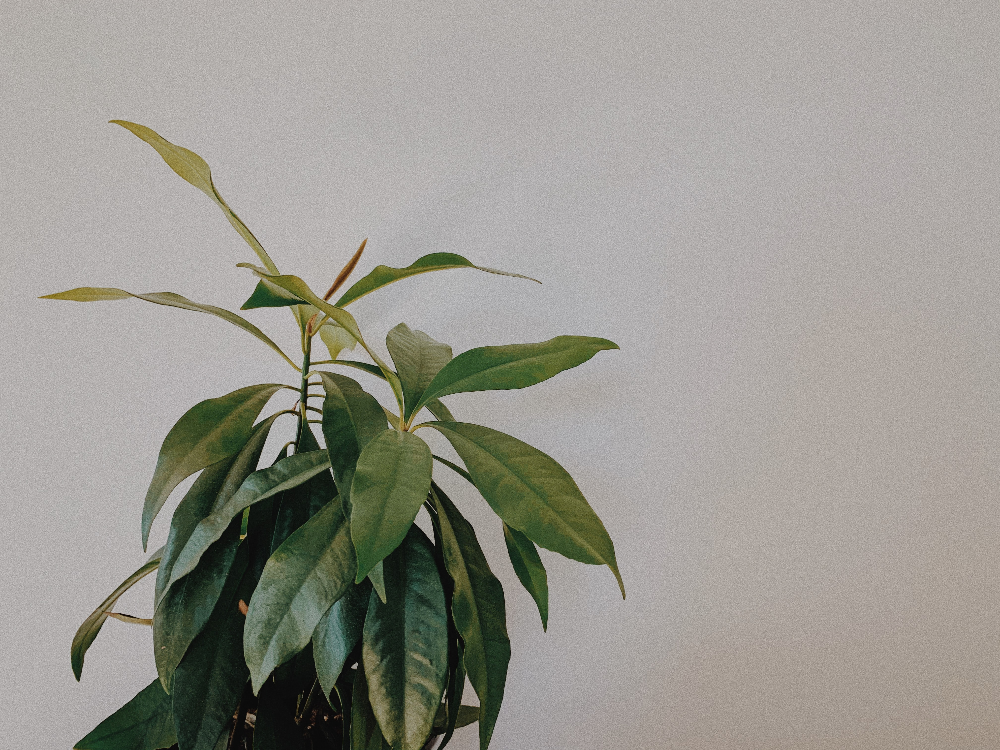

Plants
Beginner

-
ZZ Plant
The ZZ plant excels when ignored and will even grow in low-light conditions, such as dark corners of offices and homes. A workhorse of a houseplant, the ZZ can tolerate periods of drought, so water when top 2 inches of the soil is dry.
$14.00
-
Aloe Vera
Aloe plants love heat and sun but require little maintenance. Bonus: You can soothe a sunburn by snapping off one of the plump leaves and applying the cooling gel directly to your skin. Water when the top 2 inches of the soil is dry.
$16.00
-
Monstera
This stylish plant has been touted as one of the easiest houseplants ever. You can find this plant in a range of shapes and sizes. Relatively slow growers, place monstera in medium or bright spots and water when the soil surface dries out.
$14.00
-
Dieffenbachia
The variegated leaves make it more of an unusual choice for houseplants, but it is still easy to grow. It does like the temperature on the warm side, so avoid placing it near windows with cold drafts or A/C vents. Water when soil is dry.
$12.00
-
Sansevieria (Snake Plant)
Called ‘Snake Plant’ or ‘Mother-in-Law’s Tongue,’ this houseplant has striking sword-shaped leaves that add height, greenery and simply make any interior feel happier. Extremely low-maintenance, this hardy indoor plant is adaptable to almost any growing condition including low light. Water when soil is dry to the touch.
$16.00
-
Peace Lily
The peace lily with its broad, dark green leaves and charming white flowers fits in every space. Because peace lilies are one of the most efficient houseplants at filtering the air, it’s a great pick for bedrooms and office spaces. Place in bright light and water when soil is dry or leaves start to droop. (Don’t worry, they’ll spring right back up.)
$13.00
Intermediate
-
Philodendron
Philos are also great at communicating with their parents, so if you’re paying attention your plant will tell you what it needs. There also might be more maintenance in the form of pruning, as Philos are fast growers and if you choose a vining variety, you might have to keep their lengthy vines in check.
$16.00
-
Bird’s Nest Ferns
A tropical shrub, the Bird’s Nest Fern can grow to impressive sizes without expert-level care. Keep your Bird’s Nest in indirect sunlight and make sure that it gets the humidity it needs to thrive.
$12.00
-
Elephant Ear Polly
The Elephant Ear Polly or Alocasia Polly is a striking plant with thick white-veins running through its dark green leaves which can grow up to 30cm in length. This impressive plant will look great on a countertop in a kitchen or bathroom where it will thrive in the humidity.
$15.00
-
Giant Laceleaf
Anthurium clarinervium is quite a rare find. It's heart-shaped leaves are a deep forest green with a velvety surface. And, with the right conditions, they'll display a strange white/orange "flower" for you.
$18.00
-
Moth Orchid
Being a plant parent to moth orchids (also called Phalaenopsis) requires some patience. After blooming, these plants need time to regenerate before putting out another round of flowers. An orchid will drop its previous blooms so it can give all its energy to new flowers.
$17.00
-
Croton
Thick, glossy, multi-colored leaves are what we love most about crotons. However, these tropical beauties can be somewhat fussy about their treatment. For starters, they don't like sudden changes when you move them from one spot to another.
$14.00
-
Tradescantia
Some varieties of tradescantia have variegated green and purple leaves that can turn especially bright outdoors, and others have leaves that are velvety to the touch. These trailing plants are perfect for displaying in macramé plant hangers, but you can also just keep them in regular containers.
$16.00
Advanced

-
Inch plant
Its vining growth habit is both a gift and a curse for the inch plant. In a hanging basket, the distinctive, purple-and-silver-striped leaves gently cascade down, glistening in the light and looking beautiful. Over time, as the tendrils get longer and the leaves get fewer and farther in between, an inch plant begins to look sickly, even if it’s thriving
$14.00
-
Boston Fern
This lush, leafy plant can give your home serious jungle vibes as long as you can successfully imitate the growing conditions of its original home, the tropical and subtropical rainforests.
$12.00
-
Zebra Plant
Many plant enthusiasts admire zebra plants for their glossy white-veined leaves, golden flower bracts, and yellow blooms, but the showy houseplants require tediously specific growing conditions. Those caring for a zebra plant should keep their house around 70 degrees Fahrenheit year round, and position the plant near a brightly lit window that receives no direct sunlight.
$15.00
-
Banana Tree
A banana plant’s large leaves make it an attractive choice for decor, but it’s a fussy green to maintain. The perennial houseplant, which is often erroneously referred to as a tree, requires tropical conditions to survive. To keep your banana plant happy, put it near a window that receives 12 hours of direct light daily.
$18.00
-
Fiddle-Leaf Fig Tree
All the rage in design circles these past few years, the fiddle leaf fig, which is actually a ficus, is beloved for its unusual silhouette. Despite its rise in popularity, the plant is surprisingly finicky and difficult to keep alive. Too much sun, and the leaves will brown and wither. Too little sun, and the plant will fail to thrive.
$16.00
-
Goldfish Plant
The goldfish plant gets its common name from its flowers that resemble small fish. Though the goldfish plant is sometimes labeled as beginner-friendly, Swim clear of these houseplants. This is only true if you can figure out and manage their care requirements.
$17.00